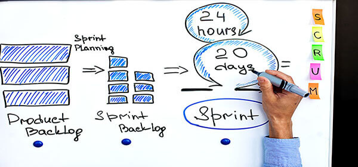
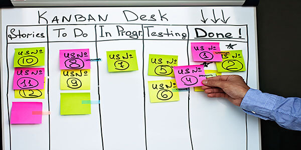

Scrum
Scrum begins its lifecycle with a set of requirements or a user story, detailing how features should perform and how each should be tested. Scrum focusses on defining key features and
objectives before each sprint. This iterative approach allows for a series of sprints to be worked through, providing small amounts of value, quickly and efficiently.

Kanban
Kanban is considered to be a simple methodology resembling a large scale 'to-do-list'. Similar to Scrum, requirements are tracked in their process by moving them along a Kanban board, stages such as to-do, developing, testing, complete.
Unlike Scrum, Kanban is based on priority, not time. Once a task is complete, the task is moved along the Kanban board, this, however, can cause problems if one team works faster than another. In this instance, bottlenecks will appear, and at that point, all team members should combine to help.
Four Agile Testing Methods